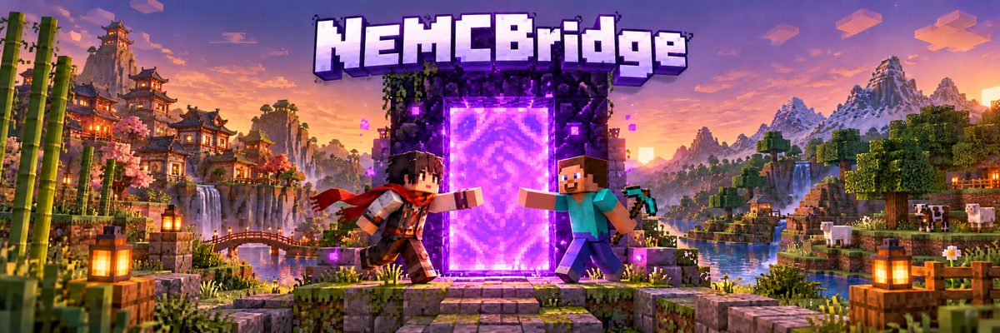

真正的共同游玩
区块加载、破坏与放置方块、双向文字聊天、玩家皮肤互显。网易玩家按账号拥有独立存档，改名重进也不丢背包。
网易竹林小筑今晚一起去下界吗？
国际版SteveSure! I'll bring the obsidian ⛏️
网易竹林小筑传送门见 👋
- 区块加载
- 方块交互
- 双向聊天
- 皮肤互显
- 命令转发
- 独立存档
房主机器人常驻网易「本地联机」房间，把玩家接入你自己的 Bedrock 服务器。
网易版搜房间号加入，国际版直连服务器。

网易玩家走 WebRTC 进入本地联机房间，NEMCBridge 在中间完成身份映射与协议转换，再通过 RakNet 接入同一台 BDS。国际版玩家照常直连，不经过桥。
从方块交互到好友申请，房主需要守在电脑前做的事，NEMCBridge 都替你做了。
区块加载、破坏与放置方块、双向文字聊天、玩家皮肤互显。网易玩家按账号拥有独立存档，改名重进也不丢背包。
带管理员登录的 Web 控制台：配置验证服务器、令牌、后端和房间参数，查看状态与运行日志。
机器人保持房间连接，掉线后按设定间隔（5–300 秒）自动重新开房。
房间在线时每 30 秒检查并同意待处理的好友申请，失败独立退避，不影响房间。
蓝青色块字横幅，开机即显示版本、访问地址与首次登录信息。
Go 静态编译，Windows、Linux、macOS 各有 amd64 与 arm64 发布包，附 SHA256 校验。
令牌独立存放：Windows 用 DPAPI 加密，Linux/macOS 以 0600 权限保存；管理密码 bcrypt 哈希。